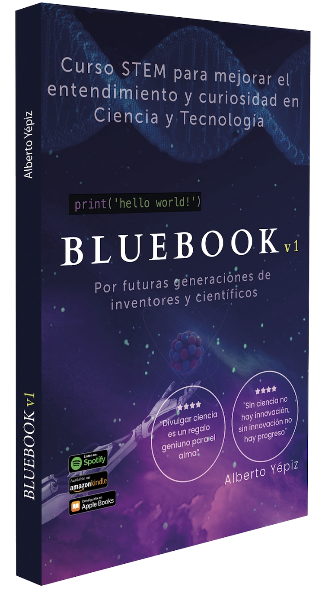

Los datos son claros.
Es momento de actuar.
Sonora está invirtiendo miles de millones en tecnología e industria avanzada. Pero sin capital humano STEM, esa inversión no alcanzará su potencial. JóvenesSTEM es la respuesta.


Investigación realizada por
Alberto Yépiz
Universidad de Sonora · Maestría en Administración y Experto
edTech · 2025